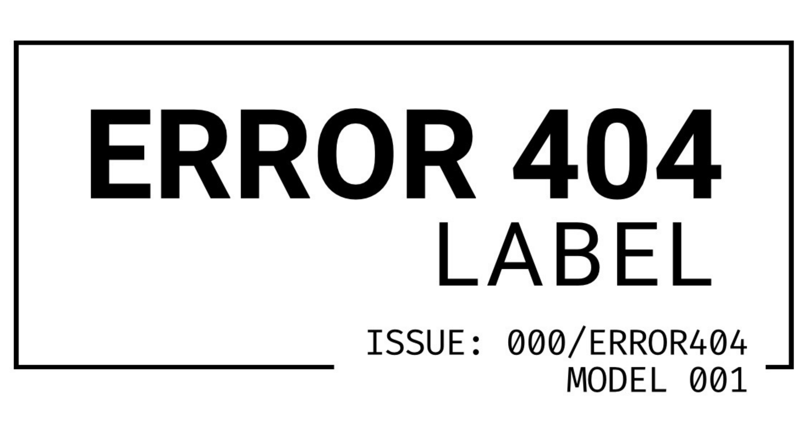

ERROR 404 LABEL was born from the desire to transform the digital concept of “404 Not Found” into something physical, rare and collectible. What is not found, what is outside the system, what doesn’t appear everywhere — that has value.
Every piece is designed as a collectible object. We don’t follow trends, we don’t mass-produce, we don’t repeat collections. We create numbered, limited and intentional pieces.
“If you found this, you’re one of the few.”
We live in an era of infinite production, where everything is replicated, copied and discarded. ERROR 404 LABEL chooses the opposite path: less quantity, more meaning.
Our mission is to create pieces that last, that tell a story and that have value not only for their design, but for the intention behind every detail.
• True exclusivity — only 404 units per collection.
• Quality over quantity.
• Minimalist design with meaning.
• Transparency and authenticity.
• Pieces created to last and be kept.